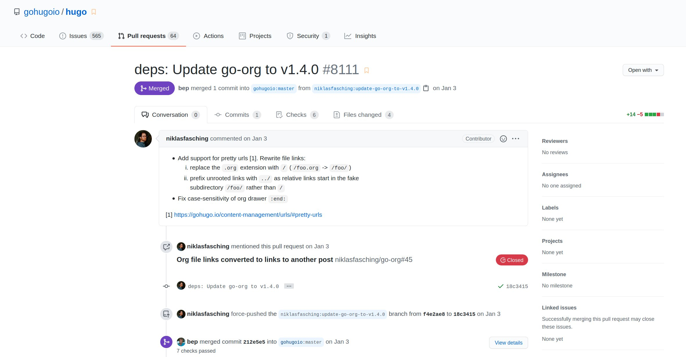
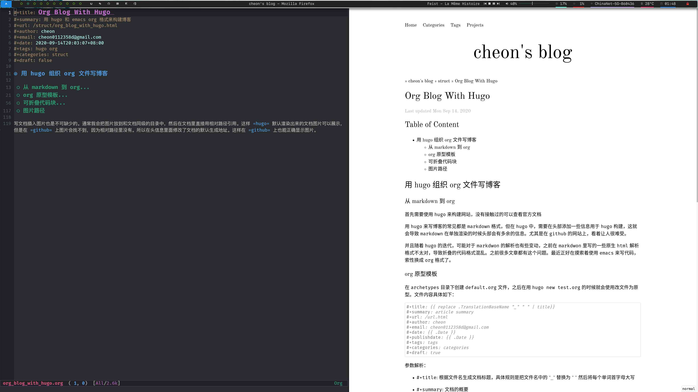

用 hugo 组织 org 文件写博客
从 markdown 到 org
首先需要使用 hugo 来构建网站，没有接触过的可以查看官方文档
用 hugo 来写博客的常见都是 markdown 格式，但在 hugo 中，需要在头部添加一些信息用于 hugo 构建，这就会导致 markdown 在单独渲染的时候头部会有多余的信息。尤其是在 github 的网站上，看着让人很难受。
并且随着 hugo 的迭代，可能对于 markdwon 的解析也有些变动，之前在 markdwon 里写的一些原生 html 解析格式不太对，导致折叠的代码格式混乱。之前很多文章都有这个问题。最近正好在摸索着使用 emacs 来写代码，索性换成 org 格式了。
org 原型模板
在 archetypes 目录下创建 default.org 文件，之后在用 hugo new test.org 的时候就会使用改文件为原型。文件内容具体如下：
#+title: {{ replace .TranslationBaseName "_" " " | title}}
#+summary: article summary
#+url: /url.html
#+author: cheon
#+email: cheon0112358d@gmail.com
#+date: {{ .Date }}
#+publishdate: {{ .Date }}
#+tags: tags
#+categories: categories
#+draft: true参数解析：
#+title: 根据文件名生成文档标题，具体规则是把文件名中的 "_" 替换为 " " 然后将每个单词首字母大写#+summary: 文档的概要#+url: 指定文档生成的url+tags: 文档的标签+categories: 文档的类别+draft: 是否是草稿，草稿在构建时默认不会渲染成html
注意在 hugo 构建或者运行时，可能会看到
Please use '#+tags[]:' notation, automatic conversion is deprecated.
Please use '#+categories[]:' notation, automatic conversion is deprecated.
类似警告，可以忽略，不影响文档的渲染。如果照提示修改，反而会导致 org 文件在 github 网站上头部信息显示异常。
可折叠代码块
写文档的时候一个常用的功能是代码块，当代码太长的时候需要可以折叠。这个在 org 中可以用原生 html 的 <detail> 标签来实现。
可折叠代码块实现
#+begin_export html <details> <summary>summary</summary> #+end_export #+begin_src 在这里写代码 #+end_src #+begin_export html </details> #+end_export
但是每次写这么一大堆也比较麻烦，所以可以用 yasnippet 来管理片段。在 emacs 中按下 M-x 执行 yas-new-snippet 并填入一下内容
code
# -*- mode: snippet -*- # name: org mode collapsable code block # key: code # -- #+begin_export html <details> <summary>$1</summary> #+end_export #+begin_src $2 $3 #+end_src #+begin_export html </details> #+end_export
将文件保存到 org-mode/code 文件，以后在写 org 文档时，只要输入 code 再按下 tab 键就会生成这段代码
图片路径
写文档插入图片也是不可缺少的。通常我会把图片放到和文档同级的目录中，然后在文档里直接用相对路径引用，这样在 github 上也能正确显示图片。
文件和图片的目录结构如下：
./content/post/
├── _index.org
├── post1.org
├── post2.org
├── post3.org
└── images
├── post1_1.png
├── post1_2.png
└── post2_1.jpg
1 directory, 7 fileshugo version < 0.81.0
在 hugo v0.81.0 之前，需要在 org 文档的头信息中添加 url 信息来修改默认生成的地址，以便在编译之后能找到对应的图片，例如
#+url: /post/post1.html这种情况下，编译出的目录结构如下：
./post/
├── index.html
├── index.xml
├── post1.html
├── post2.html
├── post3.html
├── images
│ ├── post1_1.png
│ ├── post2_2.png
│ └── post2_1.jpg
└── page
└── 1
└── index.html
3 directories, 9 fileshugo version >= 0.81.0
在 hugo v0.81.0 以及之后，使用的 go-org 依赖升级到了 v1.4.0 版本，使用相对路径的引用都会默认加上 ../ 前缀，所以用默认生成的地址就可以了，而不需要在文档的头信息中添加 url 信息，具体可以查看该 pull request 。

这种情况下，编译出的目录结构如下：
./struct/
├── post1
│ └── index.html
├── post2
│ └── index.html
├── post3
│ └── index.html
└── images
├── post1_1.png
├── post1_2.png
└── post2_1.jpg
4 directories, 6 fileshugo version >= 0.83.0
经过测试，hugo 在 0.83.0 版本将 go-org 依赖升级到了 v1.5.0 后，使用相对路径的引用都会默认加上 ../ 前缀这个特性已经没了。
也没见到哪里有说明，那就恢复成原来的改写 url 方式吧。这导致我不太想用 hugo 了，变动太频繁，有空自己搭建一个博客框架。
图片测试：

如果上面的图片还能看到，说明当前的 hugo 还能使用这种方法，否则需要去看看是否有改动再另行调整。